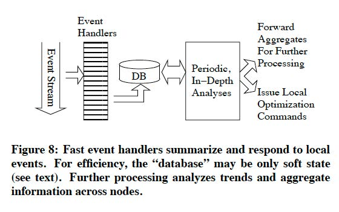

OceanStore
by Harvey Abaya, Nir Edelman, Naseem Makiya, and Rhys Yu
- An architectural paradigm that mimics biological adaptation
- It augments a system's normal operation with observation and optimization
- Observation modules for monitoring
- Optimization modules use resulting observation to adapt the computation
- Process local events
- Forward summaries to distributed hierarchy to form approximate global views of the system
- A level of fast handlers summarizes local events
- Summaries are stored in local database

- Attempts to identify and group closely related files
- Each client machine contains event handler triggered by each data object accesses
- Event handler incrementally constructs a graph representing semantic distance among data objects
- Process periodically runs clustering algorithm
- Helps remote optimization modules collocate and prefetch related files
- Adjusts the number and location of floating replicas for better service
- Event handler monitors client behavior
- More requests, more replicas
- Less requests, replica destruction